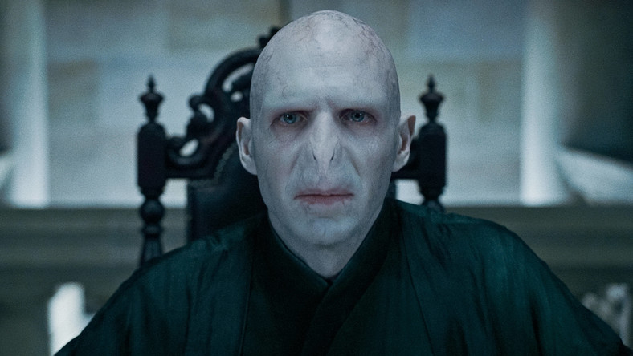

O Autorze
Joanne Rowling urodziła się w Chipping Sodbury w South Gloucestershire jako córka Anne i Petera Jamesa Rowlingów. Ze strony
matki ma korzenie francuskie i szkockie. W wieku czterech lat, wraz z rodziną, zamieszkała w Winterbourne. Uczęszczała do
szkoły średniej Wyedean School, w której matka pisarki pracowała jako technik w Wydziale Nauk. Po ukończeniu studiów autorka
przeprowadziła się do Londynu, gdzie podjęła pracę dla Amnesty International. W późniejszym okresie, wraz ze swoim ówczesnym
partnerem, przeniosła się do Manchesteru, a następnie zamieszkała w Porto, gdzie nauczała języka angielskiego. 16 października
1992 roku poślubiła dziennikarza Jorge’a Arantesa, a rok później urodziła się ich córka Jessica. Para rozwiodła się w 1993
roku. Po rozwodzie pisarka razem z córką wróciła do Londynu[5].
Galeria
Hogwart
Sklep
Pokątna
Zakazany Las
Dumbledore
Snape
Syriusz

Voldemort